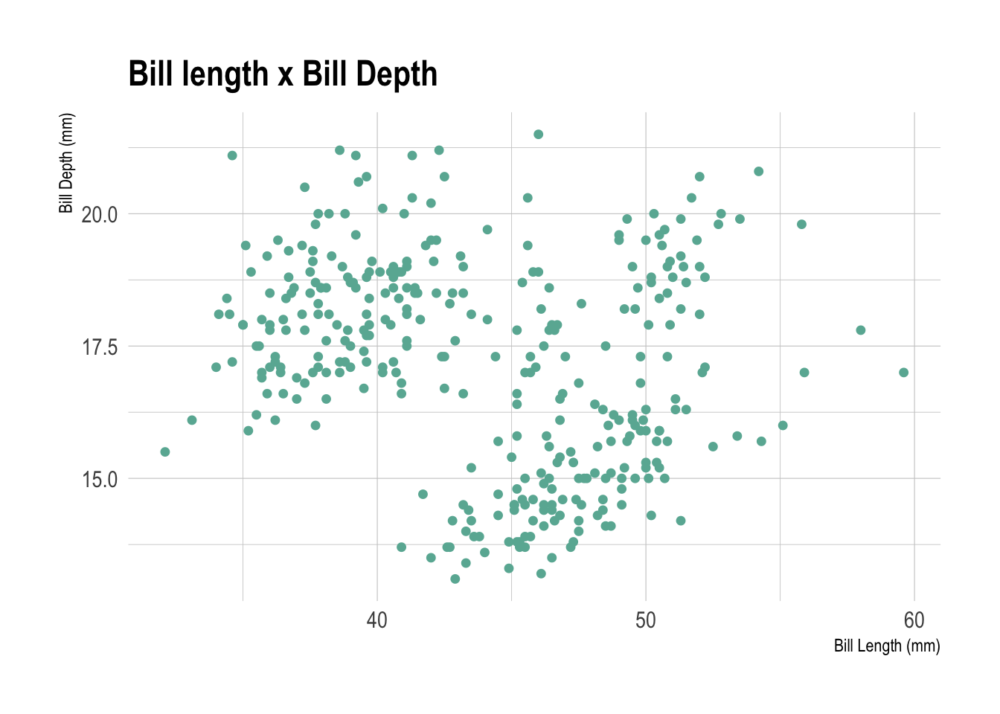
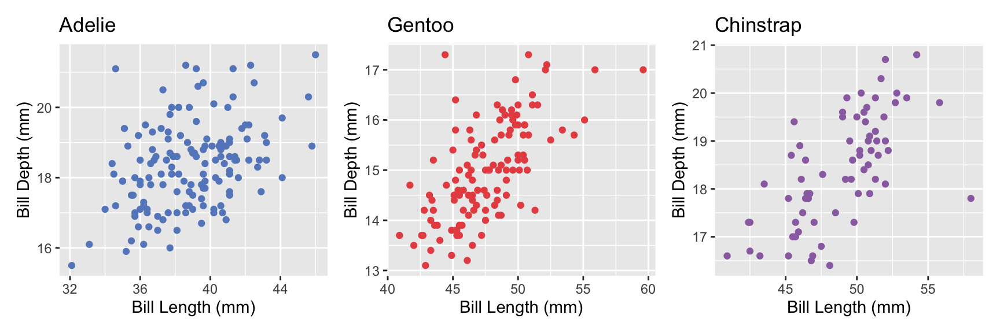

Show the code
library(tidyverse)
library(palmerpenguins)
library(hrbrthemes)
library(patchwork)
library(tinytable)This page is an output from the ‘Productive R Workflow’ course, by Yann Holtz.
Gotta load some libraries before we go…
library(tidyverse)
library(palmerpenguins)
library(hrbrthemes)
library(patchwork)
library(tinytable)Then we need to have some data to work with. We cleaned the data in a previous step and created a couple of functions.
source(file = "R/functions.r")# read clean data
df_clean_data <- readRDS(file = "input/df_clean_data.rds")A bit of context for what we are talking about.

Here is a scatterplot of all the data comparing bill length with bill depth. What do you notice? What do you wonder?
df_clean_data |>
ggplot(
aes(x = bill_length_mm, y = bill_depth_mm)
) +
geom_point(color="#69b3a2") +
labs(
x = "Bill Length (mm)",
y = "Bill Depth (mm)",
title = paste("Bill length x Bill Depth")
) +
theme_ipsum()
The following tables show the average bill length and depth by species.
average_length <- df_clean_data |>
group_by(species) |>
summarise(average_bill_length = mean(bill_length_mm, na.rm = TRUE))
tt(average_length)
bill_length_chinstrap <- df_clean_data |>
group_by(species) |>
summarise(average_bill_length = mean(bill_length_mm, na.rm = TRUE)) |>
filter(species == "Chinstrap") |>
pull(average_bill_length) |>
round(2)
average_depth <- df_clean_data |>
group_by(species) |>
summarise(average_bill_depth = mean(bill_depth_mm, na.rm = TRUE))
tt(average_depth)
bill_depth_chinstrap <- df_clean_data |>
group_by(species) |>
summarise(average_bill_depth = mean(bill_depth_mm, na.rm = TRUE)) |>
filter(species == "Chinstrap") |>
pull(average_bill_depth) |>
round(2)| species | average_bill_length |
|---|---|
| Adelie | 38.80872 |
| Chinstrap | 48.83382 |
| Gentoo | 47.50488 |
| species | average_bill_depth |
|---|---|
| Adelie | 18.34228 |
| Chinstrap | 18.42059 |
| Gentoo | 14.98211 |
As you can see the average bill length for the Chinstrap penguin is 48.83, and the average bill depth for the Chinstrap penguin is 18.42.
# Use function in functions.r
p1 <- create_scatterplot(df_clean_data, "Adelie", "#6689c6")
p2 <- create_scatterplot(df_clean_data, "Gentoo", "#e85252")
p3 <- create_scatterplot(df_clean_data, "Chinstrap", "#9a6fb0")
p1 + p2 + p3
\[E=mc^2\]
The palmerpenguins package was created and shared by Kristen Gorman, a researcher at the Palmer Station in Antarctica. It contains data about 344 penguins, including three species of penguins on three different islands. The package is licensed under a CC-0 license.
citation("palmerpenguins")To cite palmerpenguins in publications use:
Horst AM, Hill AP, Gorman KB (2020). palmerpenguins: Palmer
Archipelago (Antarctica) penguin data. R package version 0.1.0.
https://allisonhorst.github.io/palmerpenguins/. doi:
10.5281/zenodo.3960218.
A BibTeX entry for LaTeX users is
@Manual{,
title = {palmerpenguins: Palmer Archipelago (Antarctica) penguin data},
author = {Allison Marie Horst and Alison Presmanes Hill and Kristen B Gorman},
year = {2020},
note = {R package version 0.1.0},
doi = {10.5281/zenodo.3960218},
url = {https://allisonhorst.github.io/palmerpenguins/},
}